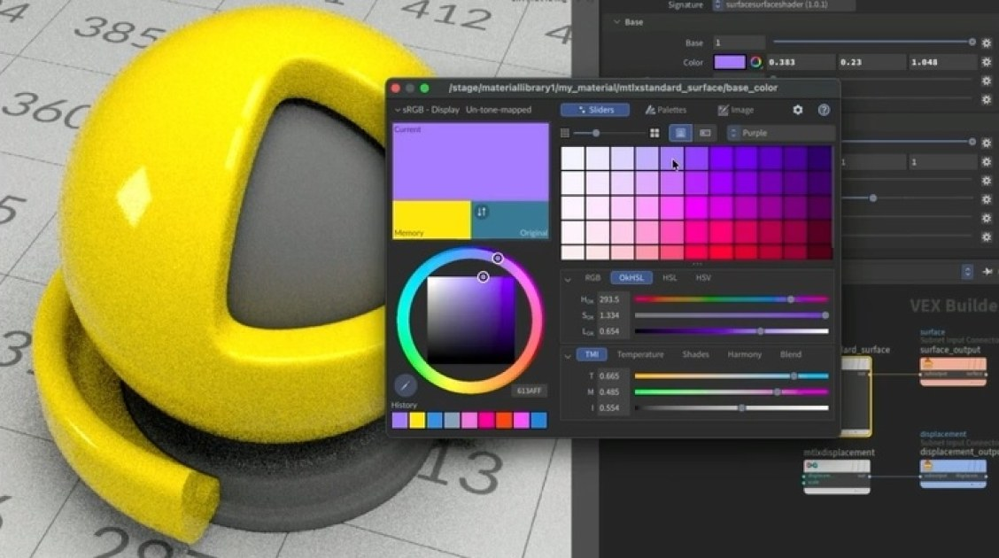

Houdini 22：原生 Gaussian Splat 編輯、重打光、Rig 與動畫
Houdini 22 把 3D Gaussian Splats 納入原生程序式工具鏈，從建立到渲染都能在 Houdini 內處理。

4D ★★★★☆
完整分析
技術／流程變更
Houdini 22 原生支援建立、編輯、重打光、rig、動畫與渲染 Gaussian Splats，讓 3DGS 不再只是外部 viewer 或一次性掃描結果。
Production 影響
對場景掃描、虛擬製作與混合幾何流程而言，最大的 Production 影響是能用 Houdini 節點化處理 splat，並與既有 SOP、Karma 與程序式工具串接。
導入測試與限制
3DGS 的碰撞、遊戲 runtime、LOD 與跨引擎交換仍不是一般 mesh 等級成熟；應先驗證輸出格式、記憶體與即時渲染成本。
BRIEF｜來源已驗證；證據深度較有限，完整分析會明確區分已知資訊與待驗證事項。